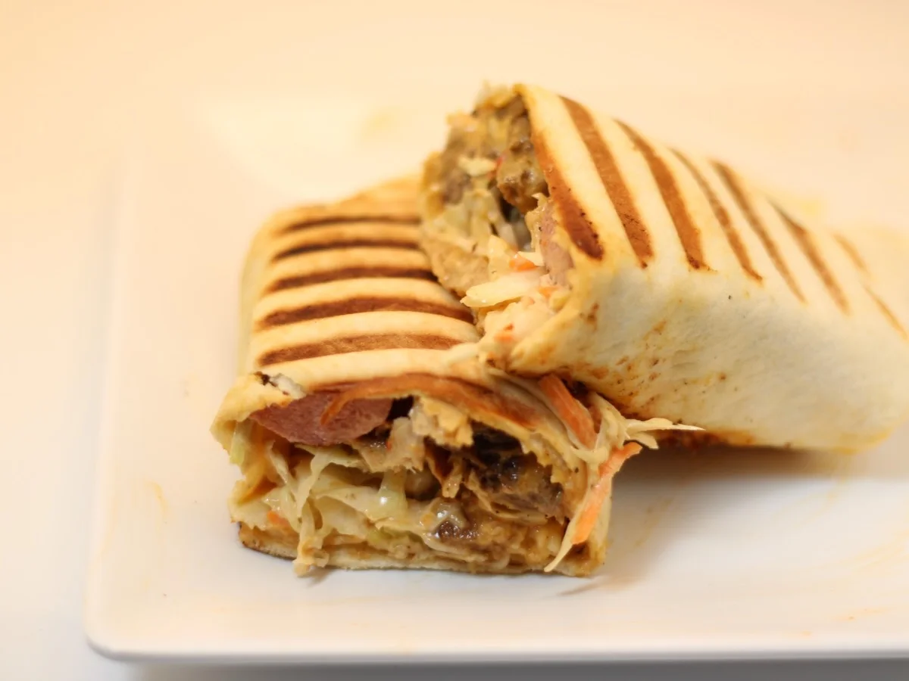
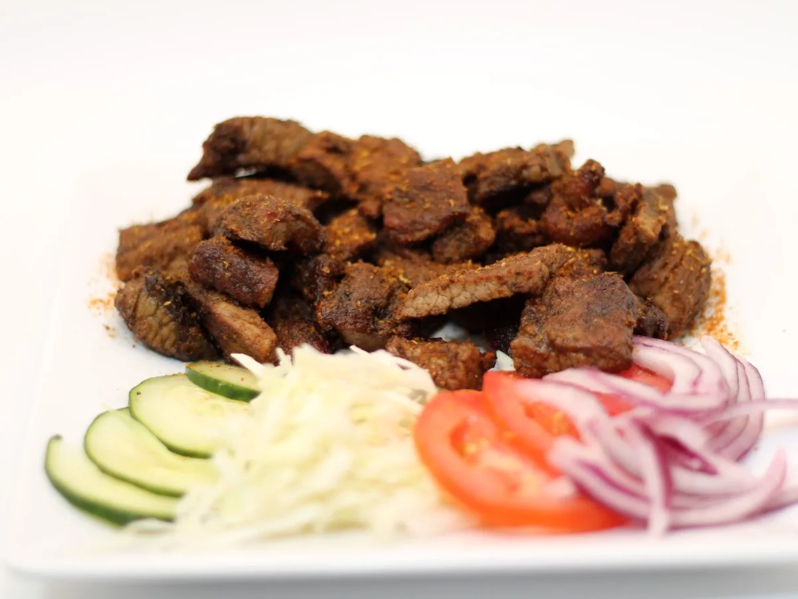
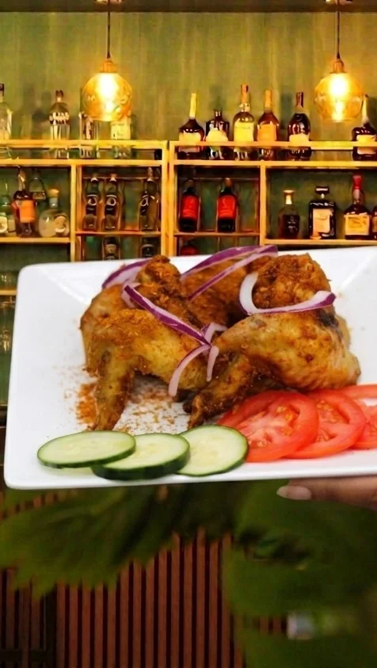

Meat Pie
Golden pastry with a savory filling that makes an easy first order or side add-on.
$5.99
Food menu
From wings and salmon bites to shawarma, jollof, seafood, soups, and full plates, the menu is easier to scan before you order.
Visual picks
If you want an easy first order, start with wings, salmon bites, or the seafood platter.

A good first pick for the table if you want something hot, familiar, and easy to share.

Crisp, saucy, and easy to split with drinks.

A stronger pick if you want shrimp, fried fish, and a full plate instead of a starter.

Grilled, stuffed, and pressed — the easy order when you want it handheld.

Spiced, smoky beef with fresh sides. The plate that built the name.

One bird, full flavor — bring backup or take half home.
Ready to eat